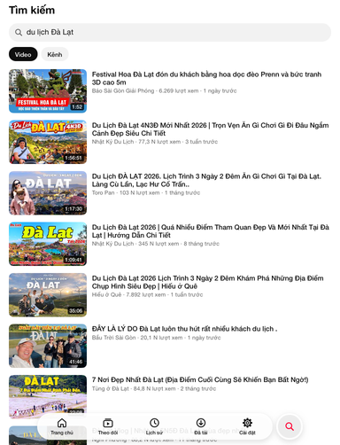
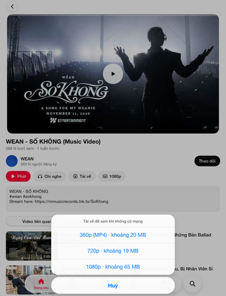
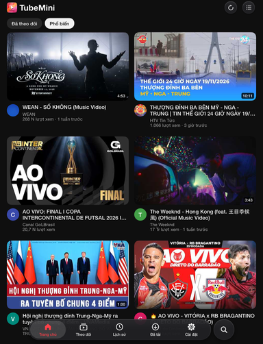

Vì sao có TubeMini?
App YouTube gốc trên iOS 5 – 8 đã ngừng chạy từ lâu, và trình duyệt cũ không mở nổi trang YouTube bây giờ. TubeMini gồm hai phần:
App TubeMini cho iPad
- Tìm video, tìm kênh, video liên quan, bình luận
- Phát 360p, 720p, 1080p; tua mượt
- Theo dõi kênh, trang chủ hiện video mới
- Lịch sử, xem tiếp từ chỗ cũ
- Chỉ nghe: phát khi khoá màn hình, thanh nghe nhạc thu nhỏ
- Tải về 360p / 720p / 1080p để xem khi không có mạng
- Giao diện kiểu iOS 26 như app YouTube mới: thanh tab kính nổi, thẻ video lớn
- Giao diện sáng / tối, thẻ hoặc danh sách
- Tự cập nhật (OTA) ngay trong app
Server tubemini-server
- Viết bằng Rust, chạy trên Windows, Ubuntu hoặc Docker
- Giả lập API GData cũ: app YouTube 1.x + tweak TubeRepair dùng lại được
- Video tải thẳng từ Google, không đi qua server
- Luôn phát tiếng gốc (bỏ bản lồng tiếng AI)
- Tự quảng bá trong mạng nhà (Bonjour)
- Cài trên Ubuntu bằng một script, tự cập nhật yt-dlp
Ảnh chụp trên iPad mini 1
 Trang chủ
Trang chủ Trang video
Trang video Trang kênh
Trang kênh
Tìm kiếm
Tải về xem offline
Giao diện tốiCách hoạt động
iPad (TubeMini) ⇄ tubemini-server trong nhà ⇄ YouTube
Server hỏi YouTube danh sách video và lấy link phát (bằng yt-dlp), rồi trả cho iPad. Hình và tiếng iPad tải thẳng từ máy chủ của Google, nên server rất nhẹ. Server không cần tài khoản Google hay API key.
1. Cài server
Ubuntu / Debian
Một script cài theo một trong hai cách: Docker (container, Docker hoặc Podman) hoặc service systemd. Cả hai cách đều tự khởi động cùng máy và tự cập nhật yt-dlp.
curl -LO https://github.com/TubeMini/TubeMini/releases/download/v0.6.0/tubemini-server-0.6.0.tar.gz
tar xzf tubemini-server-0.6.0.tar.gz
cd tubemini-server-0.6.0
sudo ./install.shScript hỏi cách cài, cổng (mặc định 8080) và mã truy cập. Chạy lại để cập nhật; gỡ bằng sudo ./install.sh --uninstall.
Windows / macOS
Có Docker Desktop: trong thư mục giải nén chạy docker compose up -d --build. Trên Windows cũng chạy thẳng được tubemini-server.exe (build từ mã nguồn, xem hướng dẫn).
2. Cài app lên iPad
Cần iPad (hoặc iPhone) iOS 5, 6, 7 hoặc 8 đã jailbreak.
Cách nhanh: Cydia
Trên iPad mở trang này bằng Safari, bấm Thêm nguồn vào Cydia. Hoặc vào Cydia → Nguồn → Sửa → Thêm, rồi nhập:
https://tubemini.github.io/cydia/Tìm TubeMini rồi cài. Các bản sau app tự báo khi có bản mới; bấm Cập nhật, app tự cài rồi khởi động lại màn hình chính.
Cài bằng file .deb
Tải vn.tubemini.io_0.6.0_iphoneos-arm.deb ở trang Releases, chép sang iPad hoặc iPhone rồi chạy dpkg -i (qua SSH, iFile hoặc Filza).
Kết nối
Mở TubeMini → Cài đặt → nhập địa chỉ server, ví dụ http://192.168.1.10:8080 (hoặc bấm Tìm máy chủ trong mạng), rồi bấm Kiểm tra kết nối.
Dùng app YouTube cũ?
App YouTube 1.x với tweak TubeRepair: đặt Custom URL là http://<IP server>:8080. Thêm /720 vào cuối để xem HD.
Nhóm Telegram

Hỏi cách cài, báo lỗi, góp ý tính năng và nhận tin khi có bản mới: nhóm t.me/tivikit (@tivikit).
iPad iOS 5 / 6 không mở được Telegram (máy chủ Telegram cần kết nối bảo mật mới hơn). Hãy quét mã QR bằng camera điện thoại, hoặc mở Telegram trên điện thoại / máy tính rồi tìm @tivikit.
Mở trong TelegramCâu hỏi thường gặp
Xem được khi ra ngoài (4G) không?
Được, nếu iPad kết nối VPN về nhà (L2TP/IPsec có sẵn trong iOS). Server cũng có chế độ phát qua server (proxy_fallback), mặc định tắt.
Có cần tài khoản Google không?
Không. Kênh theo dõi và lịch sử lưu trên server của bạn.
Máy nào dùng được?
iPad và iPhone iOS 5 – 8 đã jailbreak. Đã thử trên iPad 1 (iOS 5.1.1), iPhone 5 (iOS 6.1.4, dùng hết màn 4 inch) và iPad mini 1 (iOS 8.4.1). Server chạy trên mọi máy Windows, Linux hay macOS.